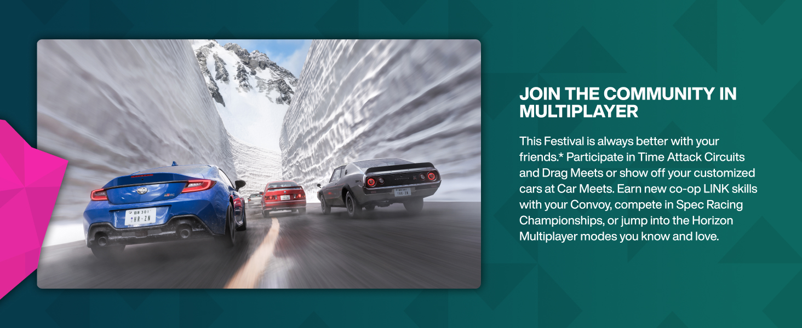

Driving Tips & Techniques
Master advanced driving techniques including drifting, braking zones, optimal racing lines, and competitive strategies.
Core Racing Techniques
The Racing Line
The optimal path through a corner that maximizes entry speed and exit velocity. Generally: brake in a straight line, turn at the apex, and accelerate out using the full track width.
Pro Tip: Aim to pass the corner's midpoint on the inside of the track - this is your apex point.
Trail Braking
Continue braking slightly into the corner entry while reducing steering angle. This transfers weight to the front tires, improving turn-in grip and allowing later braking.
Pro Tip: Start with 100% braking in the straight, release brake progressively as you turn in.
Heel-Toe Downshifting
Match engine RPM to wheel speed when downshifting to prevent rear-wheel lockup and chassis instability. Essential for smooth, fast corner entries.
Pro Tip: Practice in free play first - timing the rev-match takes months to perfect.
Slipstream Drafting
Follow closely behind another car to reduce aerodynamic drag. Use the saved power for a burst of speed on straights to overtake.
Pro Tip: Draft at 1-2 car lengths, then move to the side or ahead before the braking zone.
Drift Techniques
Clutch Kick
Press the clutch pedal and rapidly release while turning to break rear tire traction. The engine revs spike and send power through the wheels, initiating a slide.
Pro Tip: Works best in RWD cars with no traction control.
Handbrake Drift
Pull the handbrake while turning to lock the rear wheels and initiate a drift. Requires quick throttle input to keep the car sliding.
Pro Tip: Use sparingly - it damages tires quickly and is slower than clutch kick for sustained drifts.
Power Oversteer
Apply heavy throttle mid-corner to break the rear tires loose. The car's forward momentum combined with lateral force creates a controlled slide.
Pro Tip: Requires high-horsepower RWD cars and careful throttle modulation.
Feint/Scandinavian Flick
Turn briefly away from the corner, then snap the wheel into the turn. The weight transfer helps rotate the car and initiate a drift with minimal speed loss.
Pro Tip: Essential for low-traction surfaces where power cannot initiate drift alone.
Surface-Specific Tips
Tarmac Racing
Focus on clean racing lines and smooth inputs. On tarmac, inputs should be gradual - quick movements cause weight transfer issues. Use all available grip.
Gravel/Dirt
Inputs can be more aggressive since surfaces allow more sliding. The car will naturally drift - use this to your advantage. Suspension settings should be softer.
Wet Conditions
Reduce tire pressure by 3-5 PSI. Drive smoothly - aggressive inputs break traction easily. Use gradual steering and braking. Visibility is reduced - use headlights.
Snow/Ice
Extremely low grip requires early braking and gentle inputs. AWD cars excel here. Momentum is your friend - maintain speed and avoid stopping.
Competitive Racing Strategies
Defensive Driving
When leading: take defensive racing lines that prevent overtakes. Cover the inside on corners, use the outside line on straights. Never make contact - both cars suffer.
Aggressive Overtaking
When chasing: study opponent's weaknesses. Late braking into corners, alternate lines they don't expect, and use slipstream on every straight.
Mental Racing
Stay calm under pressure. A clean lap is better than a risky overtake that results in a crash. Patience wins championships.
Consistency Over Speed
One perfect lap after another beats one blazing lap followed by crashes. Focus on eliminating mistakes before pushing for faster times.
Common Mistakes to Avoid
Braking Too Late
Late braking costs more time than any other mistake. Running wide or off-track to compensate for late braking loses more time than braking earlier and taking the optimal line.
Chasing Opponent Lines
Following an opponent's line exactly means you're always behind. Find your own optimal line - even a slightly different path can be faster through corners.
Ignoring Tire Management
In long races, pushing 100% from lap one causes tire degradation. Balance your pace - fast enough to maintain position, smooth enough to preserve tires for the final laps.
Overdriving
Trying too hard causes mistakes. If you make an error, accept it and move on rather than risking more errors trying to recover immediately.
⚡ Lag Ruining Your Races?
High ping affecting your competitive performance? Get the edge with ExitLag - optimized for racing games.
Try ExitLag Free